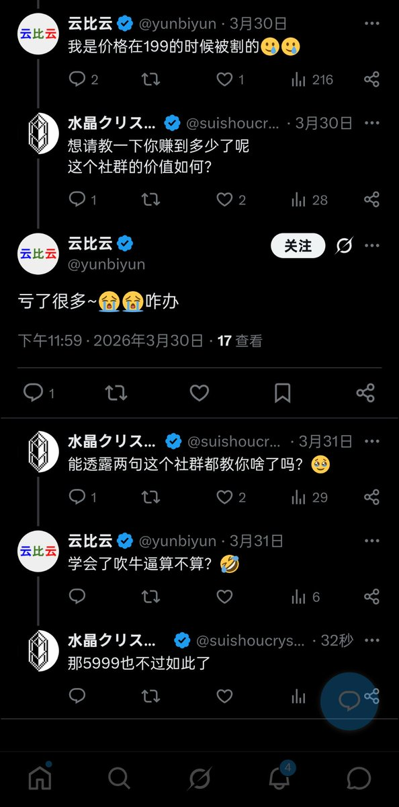

奶昔🥤
@realNyarime
@suishoucrystal 只能说，立人设、建社群这种事情是长久不了的。连我这种一分钱都没给的，也能被泼上不负责任的脏水，那也不知道该解释啥
有的时候挺无力的，被骗的是我，被抄的是我。反而我去抄别人，还会被路人网友一起挂，无奈

水晶クリスタル
@suishoucrystal
营销通常是做一个漏斗，
比如给教人赚钱的社群设置入群费
先让交199元打头阵，吸引目光
再让交3999元，让外界认为产品真的有含金量
最后让交5999元，用天价噱头搞出流量，吸引住被唬到的人
之后愿意交5999的就是最绿的那一茬韭菜
那我还能说啥了 https://t.co/Xx7xoxyO2V